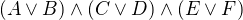

Logic and Proof
5 Classical Reasoning
If we take all the rules of propositional logic we have seen so far
and exclude reductio ad absurdum, or proof by contradiction, we have
what is known as intuitionistic logic. In intuitionistic logic, it
is possible to view proofs in computational terms: a proof of  is a proof of
is a proof of  paired with a proof of
paired with a proof of  , a proof of
, a proof of  is a procedure which transforms evidence for into evidence
for , and a proof of
is a procedure which transforms evidence for into evidence
for , and a proof of  is a proof of one or the other,
tagged so that we know which is the case. The ex falso rule makes
sense only because we expect that there is no proof of falsity; it is
like the empty data type.
is a proof of one or the other,
tagged so that we know which is the case. The ex falso rule makes
sense only because we expect that there is no proof of falsity; it is
like the empty data type.
Proof by contradiction does not fit it well with this world view: from
a proof of a contradiction from  , we are supposed to magically
produce a proof of . We will see that with proof by contradiction,
we can prove the law of the excluded middle, . From a
computational perspective, this would say that we can ways decide
whether or not is true.
, we are supposed to magically
produce a proof of . We will see that with proof by contradiction,
we can prove the law of the excluded middle, . From a
computational perspective, this would say that we can ways decide
whether or not is true.
Classical reasoning does introduce a number of principles into logic, however, that can be used to simplify reasoning. In this chapter, we will consider these principles, and see how they follow from the basic rules.
5.1 Proof by Contradiction
Remember that in natural deduction, proof by contradiction is expressed by the following pattern:
The assumption is canceled at the final inference.
In Lean, the inference is named by_contradiction, and since it is a
classical rule, we have to use the command open classical before it
is available. Once we do so, the pattern of inference is expressed as
follows:
One of them most important consequences of this rule is the law of the
excluded middle. In mathematical arguments, one often splits
a proof into two cases, assuming first and then . Using
the elimination rule for disjunction, this is equivalent to using  , a classical principle known as the law of the excluded
middle. Here is a proof of this, in natural deduction, using a proof
by contradiction:
, a classical principle known as the law of the excluded
middle. Here is a proof of this, in natural deduction, using a proof
by contradiction:
Here is the same proof rendered in Lean:
The principle is known as the law of the excluded middle because it
says that a proposition A is either true or false; there is no
middle ground. As a result, the theorem is named em in the Lean
library. For any proposition A, em A denotes a proof of A ∨ ¬ A,
and you are free to use it any time classical is open:
Or even more simply:
In fact, we can go in the other direction, and use the law of the excluded middle to justify proof by contradiction. You are asked to do this in the exercises.
Proof by contradiction is also equivalent to the principle . The implication from right to left holds intuitionistically; the other implication is classical, and is known as double-negation elimination. Here is a proof in natural deduction:
And here is the corresponding proof in Lean:
In the next section, we will derive a number of classical rules and equivalences. These are tricky to prove. In general, to use classical reasoning in natural deduction, we need to extend the general heuristic presented in Section 3.3 as follows:
- First, work backwards from the conclusion, using the introduction rules.
- When you have run out things to do in the first step, use elimination rules to work forwards.
- If all else fails, use a proof by contradiction.
Sometimes a proof by contradiction is necessary, but when it isn't, it
can be less informative by a direct proof. Suppose, for example, we
want to prove . In a direct proof, we
assume , , and  , and work towards
, and work towards  . Along the way, we will
derive other consequences of , , and , and these may be
useful in other contexts. If we use proof by contradition, on the
other hand, we assume , , , and , and try to prove
. Along the way, we will
derive other consequences of , , and , and these may be
useful in other contexts. If we use proof by contradition, on the
other hand, we assume , , , and , and try to prove
 . In that case, we are working in an inconsistent context; any
auxiliary results we may obtain that way are subsumed by the fact that
we ultimately is a consequence of the hypotheses.
. In that case, we are working in an inconsistent context; any
auxiliary results we may obtain that way are subsumed by the fact that
we ultimately is a consequence of the hypotheses.
5.2 Some Classical Principles
We have already seen that and are two important theorems of classical propositional logic. In this section we will provide some more theorems, rules, and equivalences. Some will be proved here, but most will be left to you in the exercises. In ordinary mathematics, these are generally used without comment. It is nice to know, however, that they can all be justified using the basic rules of classical natural deduction.
If  is any implication, the assertion
is any implication, the assertion  is
known as the contrapositive. Every implication implies its
contrapositive, and the other direction is true classically:
is
known as the contrapositive. Every implication implies its
contrapositive, and the other direction is true classically:
Here is another example. Intuitively, asserting "if A then B" is equivalent to saying that it cannot be the case that A is true and B is false. Classical reasoning is needed to get us from the second statement to the first.
Here is the same proof, rendered in Lean:
Implication can be rewritten in terms of disjunction and negation: The forward direction requires classical reasoning.
The following equivalences are known as De Morgan's laws:
The forward direction of the second of these requires classical reasoning.
Using these identities, we can always push negations down to propositional variables. For example, we have
A formula built up from  ,
,  , and
, and  in which
negations only occur at variables is said to be in negation normal
form.
in which
negations only occur at variables is said to be in negation normal
form.
In fact, using distributivity laws, one can go on to ensure that all the disjunctions are on the outside, so that the formulas is a big or of and's of propositional variables and negated propositional variables. Such a formula is said to be in disjunctive normal form. Alternatively, all the and's can be brought to the outside. Such a formula is said to be in conjunctive normal form. An exercise below, however, shows that putting formulas in disjunctive or conjunctive normal form can make them much longer.
5.3 Exercises
- Show how to derive the proof-by-contradiction rule from the law of the excluded middle, using the other rules of natural deduction.
- Give a natural deduction proof of
 from
from  . (You do not need to use proof by contradiction.)
. (You do not need to use proof by contradiction.) - Construct a natural deduction proof of
 from
. You can do it as follows:
from
. You can do it as follows:
- First, prove , and hence , from
and .
- Use this to construct a proof of , and hence , from and .
- Use this to construct a proof of a contradiction from
 and
and  .
. - Using proof by contradiction, this gives you a proof of from .
- First, prove , and hence
- Give a natural deduction proof of
 from
from  . You may use the law of the excluded middle.
. You may use the law of the excluded middle. - Put  in disjunctive normal form, that is, write it as a big "or" of "and"'s.
Prove
¬ (A ∧ B) → ¬ A ∨ ¬ Bby replacing the sorry's below by proofs.open classical variables {A B C : Prop} -- Prove ¬ (A ∧ B) → ¬ A ∨ ¬ B by replacing the sorry's below -- by proofs. lemma step1 (H₁ : ¬ (A ∧ B)) (H₂ : A) : ¬ A ∨ ¬ B := have ¬ B, from sorry, show ¬ A ∨ ¬ B, from or.inr this lemma step2 (H₁ : ¬ (A ∧ B)) (H₂ : ¬ (¬ A ∨ ¬ B)) : false := have ¬ A, from suppose A, have ¬ A ∨ ¬ B, from step1 H₁ `A`, show false, from H₂ this, show false, from sorry theorem step3 (H : ¬ (A ∧ B)) : ¬ A ∨ ¬ B := by_contradiction (assume H' : ¬ (¬ A ∨ ¬ B), show false, from step2 H H') Also do these:
open classical variables {A B C : Prop} example (H : ¬ B → ¬ A) : A → B := sorry example (H : A → B) : ¬ A ∨ B := sorry